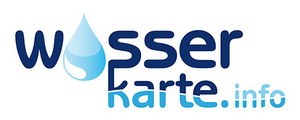
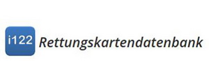

|  |  |
Das Projekt www.feuerwehreinsatz.info wird vom team122.info gemeinsam weiterentwickelt um den Nutzen für die Salzburger Feuerwehren langfristig zu sichern.
Das Team122.info unterstützt den Wissenstransfer beim Projekt www.feuerwehreinsatz.info zwischen den Feuerwehren im Bundesland Salzburg.
Jedes Mitglied einer Feuerwehr und Mitdenkende können Ideen einbringen.
Durch das gemeinsame lernen, werden Fehler und Kosten bei den einzelnen Feuerwehren reduziert.
Frei nach dem Gedanken:
Retten - Schützen - Löschen - Bergen
------------------------
Bernhard Michael (Tirol - FF Wörgel - Projekt: www.i122.at - Rettungskartendatenbank)
Dominik Neuner (Tirol - FF Karrösten - Projekt: www.122.at - Rettungskartendatenbank)
Gabriel Freinbicher (OÖ - FF Aschach/Donau - Projekt: www.wasserkarte.info)
Markus Egger (Kärnten - FF Treffling - Projekt: feuerwehreinsatz.info)
Martin Horn (Kärnten - FF Velden - Projekt: feuerwehreinsatz.info)
Martin Tidl (Kärnten - FF Olsach/Molzbichl - Projekt: feuerwehreinsatz.info)
Sepp Heiß (Kärnten - FF Rennweg - Projekt: feuerwehreinsatz.info)
Andreas Rauchenbacher (Salzburg - FF St. Johann - Projekt: www.feuerwehreinsatz.info)
Bernd Sommerbichler (Salzburg - FF Zell am See - Projekt: www.feuerwehreinsatz.info)
Christoph Zitz (Salzburg - FF Bergheim - Projetk: www.fweus.at)
Christian Reingruber (Salzburg - FF Zell am See - Projekt: www.feuerwehreinsatz.info)
Daniel Pretterer (Salzburg - FF Bad Gastein - Projekt EMEREC)
Dominik Repaski (Salzburg - FF Seeham - Projekt feuerwehreinsatz.info)
Franz Ferner (Salzburg - FF Ramingstein - Projekt: Online Lösung Bezirk Lungau)
Gerhard Scherfl (Salzburg - FF Kuchl - Projekt: www.feuerwehreinsatz.info)
Guido Harucksteiner ( Salzburg - FF Eugendorf - Projekt feuerwehreinsatz.info)
Hannes Lainer (Salzburg - FF St. Johann - Projekt: www.feuerwehreinsatz.info )
Josef Mitterbauer (Salzburg - FF Nußdorf - Projekt: www.feuerwehreinsatz.info)
Lukas Fritzenwanger (Salzburg - FF Uttendorf - Projekt: www.feuerwehreinsatz.info)
Marco Vazzana (Salzburg - FF Mauterndorf- Projekt: www.feuerwehreinsatz.info)
Markus Oberhuber (Salzburg - FF Großarl -Projekt: www.feuerwehreinsatz.info)
Markus Pfeifenberger (Salzburg - FF St. Michael - Projekt: www.feuerwehreinsatz.info)
Markus Sams (Salzburg - FF Ebenau - Projekt: www.feuerwehreinsatz.info)
Martin Zorec (Salzburg – FF Abtenau – Projekt : www.feuerwehreinsatz.info)
Michael Jursitzka (Salzburg - FF St. Gilgen - Projekt: www.feuerwehreinsatz.info )
Michael Sattler (Salzburg - FF Thalgau - Projekt: eigene IPad Lösung und www.feuerwehreinsatz.info)
Norbert Martinek (Salzburg - FF Hallwang - Projekt: www.feuerwehreinsatz.info )
Ortwin Schitter (Salzburg - FF Oberndorf - Eigenes App - Projekt www.feuerwehreinsatz.info)
Patrick Bacher (Salzburg - FF Tamsweg Projetk www.feuerwehreinsatz.info)
Stefan Entacher (Salzburg - FF Großarl - Projekt: www.feuerwehreinsatz.info)
Stefan Hofer (Salzburg - FF Saalfelden - Projekt: www.feuerwehreinsatz.info)
Stefan Lanner (Salzburg – FF Rußbach – Projekt: www.feuerwehreinsatz.info)
Stefan Vötter (Salzburg - FF Kuchl - Projekt: www.feuerwehreinsatz.info)
Wolfgang Essl (Salzburg - FF Mauterndorf- Projekt: www.feuerwehreinsatz.info)
Johannes Strassmayr (Wien - Projekt pegelalarm.at)
Günter Öller (Wien - Projekt pegelalarm.at)
Enrico Bragante (Wien - Projekt pegelalarm.at)